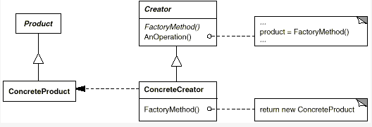

简介
工厂方法模式(Factory Method)，又称虚构造器。在《设计模式》中如此定义：
定义一个用于创建对象的接口，让子类决定实例化哪一个类。Factory Method 使一个类的实例化延迟到其子类。
工厂方法模式中包含四个核心角色：抽象工厂、具体工厂、抽象产品、具体产品。
工厂方法模式示例图如下：

Creator类为抽象工厂类，包含一个虚方法FactoryMethod()，具体由子类实现；包含一个类方法AnOperation()，该方法中通过调用FactoryMethod()类获取产品。ConcreteCreator类为具体工厂类，继承于Creator类，实现了FactoryMethod()方法，该方法实例化并返回一个ConcreteProduct类。Product类为抽象产品类。ConcreteProduct类为具体产品类。
理解工厂方法模式
理解之前，我们先来讲一个小明买衣服的故事。
小明买衣服
假设，小明需要一件衣服。
同时，夏天小明需要的衣服是短袖，冬天小明需要的衣服是棉袄。
但是呢，小明不会自己织造衣服，更不理解衣服织造的过程，他只是想得到这么一件衣服。
所以，他需要向生产衣服的工厂购买衣服。假设工厂A生产短袖、工厂B生产棉袄。那么，夏天小明需要向工厂A购买短袖，冬天小明需要向工厂B购买棉袄。
甚至，小明还需要毛衣、外套，那他只要在需要时，向对应工厂C(生产毛衣)、工厂D(生产外套)，购买毛衣、外套即可。
换而言之，小明只需要更换相应的工厂就能得到相应的衣服(产品)。
由此及彼
其实，小明买衣服的过程就是工厂方法模式的应用。短袖、棉袄等是具体的产品，继承与衣服抽象类。工厂A、B、C、D则是具体的工厂，继承与抽象工厂。每个工厂返回对应的、独有的产品实例，就是工厂方法的作用。
在工厂方法这种模式下，不管有多少新增产品，只要创建出生产对应产品的具体工厂实例即可。完全符合开闭原则(允许扩展，不允许修改)。
虽然，用户不需要知道产品的生产过程，但是，用户必须知道对应的具体工厂，才能得到对应的产品。而且，想要获得一个简单的产品，必须创建一个具体工厂，这也是工厂方法模式的一个缺陷。
或许，没有结合实际，你还不清楚这个模式究竟有什么用处。
那接下来，我将结合java代码进行演示，并用jdbc的例子来说明该模式的作用。
代码演示(java)
首先，我们先创建出抽象产品和抽象工厂类：
1 | // 抽象产品 |
1 | // 抽象工厂 |
然后，我们创建具体产品A，重载并实现抽象产品类中的虚方法：
1 | public class ConcreteProduct_A extends Product{ |
注意：此时用户并不知道产品A是如何实现的，也不知道产品A的类名，用户只知道获得一件产品之后可以打印产品信息。因此，用户无法通过new ConreteProduct_A()来获得这个产品对象。
接着，我们创建生产产品A的具体工厂A：
1 | public class ConcreteCreator_A extends Creator { |
由于工厂A继承于抽象工厂，便可以调用printProductInfo()方法，来打印自己生产的产品的信息。
同时，告诉用户工厂A ConcreteCreator_A 可以生产产品A，只要调用工厂A的createProudct()方法即可。于是，用户便可以如下获取并使用产品A：
1 | Creator creatorA = new ConcreteCreator_A(); |
但是问题来了，为什么不直接告诉用户产品A的类名ConcreteProduct_A，用户直接new ConcreteProduct_A()，不也能得到产品A的实例吗？
其实，真正的工厂方法并没有那么简单，不是直接new ConcreteProduct_A()返回一个产品实例就完事的，而是需要对产品进行相应的“封装”才返回给用户的。
举个栗子
JDBC数据库连接
以JDBC为例，我们用java连接MySql数据库的常规代码如下：
1 | import java.sql.Connection; // jdk数据库连接器 |
1 | // 1、首先咱们把mysql的驱动交给java管理 |
在这个过程中，java.sql.Connection和java.sql.Driver是java提供给数据库方的接口。java提供这种规范，要求数据库方必须实现这两个接口，才能让java连接到数据库。同时，由于是接口，用户不能实例化，只有通过工厂方法才能得到实例对象。
java.sql.Connection相当于抽象产品，java.sql.Driver相当于抽象工厂。com.mysql.jdbc.Driver相当于产生具体产品(mysql连接)的具体工厂。而至于具体产品，用户甚至不需要知道它的类名，只需要知道Connection接口中定义了哪些可以使用的方法即可。
至于数据库方如何实现java与自身数据库的连接，具体过程就更不需要用户知道。用户只需要知道通过com.mysql.jdbc.Driver这个具体工厂，可以得到连接mysql的连接类即可。然后，通过这个连接类(产品)，用户便可以与mysql数据库进行交互了。
由于，市面上不止mysql一家数据库，还有SQL Server、Oracle等不错的数据库。如果用户想用其它数据库，那就跟小明在不同时空下想购买不同衣服一样，只需要找到对应的具体工厂(数据库驱动类)，就能得到具体产品(数据库连接类)。这两个都由各数据库来实现。
而用户根据自身情况从不同的具体工厂(数据库驱动类)，获取不同的产品，只需要导入并注册不同的数据库驱动类即可，其它都不需要修改，示例博客。
深入源码
深入java.sql和com.mysql.jdbc，找到工厂方法getConnection()的源码在java.sql.DriverManage类中：
1 | Connection con = aDriver.driver.connect(url, info); |
这行代码调用注册的数据库驱动类中的connect()方法，于是再找到com.mysql.jdbc.Driver类的父类com.mysql.jdbc.NonRegisteringDriver(实现了java.sql.Driver接口)中的connect()方法，如下：
1 | public Connection connect(String url, Properties info) throws SQLException { |
可以看到工厂方法并非简单返回一个具体产品(数据库连接类)即可，而是需要进行多层的包装和处理，才能返回给用户。
所以，这就解释了为什么不直接告诉用户com.mysql.jdbc.Connection类，让用户自己实例化具体产品(new com.mysql.jdbc.Connection(""))，而是要通过具体工厂来返回这个实例化的具体产品。当然，其原因不止如此。。。
总而言之，工厂方法模式在框架开发、多人协作的方面有着广泛的应用，大大降低了各模块之间的耦合性。